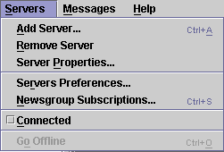
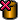

The Servers Menu contains commands to manipulate News Servers and network connections.

| Keyboard Shortcut: | Ctrl+A |
| Toolbar Button: |
Brings up the Server Properties dialogue box, in which you can describe a new News Server for NewsAgent to use.
| Keyboard Shortcut: | None |
| Toolbar Button: |  |
Removes a server. You will be asked if you are sure. Clicking "Yes" will remove the News Server, along with all information about subscribed groups and cached header information.
This menu command is only enabled when a News Server is selected in the servers & folders tree panel.
| Keyboard Shortcut: | None |
| Toolbar Button: |
Displays the Server Properties dialogue box. The dialogue will not allow you to change the host name for the server. This is a limitation in the current version of NewsAgent.
This menu command is only enabled when a News Server is selected in the servers & folders tree panel.
| Keyboard Shortcut: | None |
| Toolbar Button: |
Displays the User Preferences dialogue, open at the "Servers" tab. You can add, remove and manipulate News Servers using this dialogue.
| Keyboard Shortcut: | Ctrl+S |
| Toolbar Button: |
Displays the Subscriptions dialogue box, which allows you to change the Newsgroups you are currently subscribed to on all your News Servers.
| Keyboard Shortcut: | None |
| Toolbar Button: |
If this menu item has a tick next to it, you are connected to the currently selected News Server. This menu command toggles whether you are connected or not.
This menu command is only enabled when a News Server is selected in the servers & folders tree panel.
| Keyboard Shortcut: | Ctrl+O |
| Toolbar Button: |
Closes all current network connections.
If you choose to go offline and then try to do something that requires a network connection, you will be asked if you want to go back online. The operation will only be able to continue if you choose Yes.
Go Offline is only enabled when one or more network connections are open.